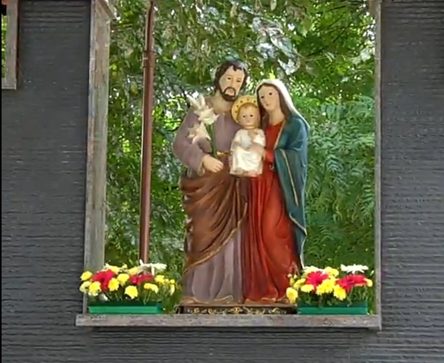

_ Letter from the Parish Priest
Fr Bernard Lawrence
Diocesan Parish Priest
AddressNazareth Nagar,
Nazareth Nagar, GNT Road, Near Moolakadai, Chennai-600 110
Born
1958-07-23
Ordination
0000-00-00
Mobile
9444066923
abpmmsec@gmail.com
_ History

The Feast of the Holy Family is a liturgical celebration in the Catholic Church in honor of Jesus of Nazareth, his mother, the Blessed Virgin Mary, and his foster father, Saint Joseph, as a family. The primary purpose of this feast is to present the Holy Family as a model for Christian families.[1] From the 17th century, the feast has been celebrated at a local and regional level and at that level was promoted by Pope Leo XIII. In 1921, Pope Benedict XV made it part of the General Roman Calendar and set on the Sunday within the Octave of the Epiphany; that is to say, on the Sunday between January 7 through January 13, all inclusive (see General Roman Calendar of 1954).[3][4] The 1962 Roman Missal, whose use is still authorized in the circumstances indicated in the 2007 motu proprio Summorum Pontificum, follows the General Roman Calendar of 1960, which has the celebration on that date. The 1969 revision of the General Roman Calendar moved the celebration to Christmastide, assigning it to the Sunday within the Octave of Christmas, that is, the Sunday between Christmas Day and New Year's Day (both exclusive), or if both Christmas Day and the Solemnity of Mary, Mother of God are Sundays, on 30 December (always a Friday in such years). When not celebrated on a Sunday, it is not a holy day of obligation.[5] Formerly, the Sunday within the Octave of Christmas was in fact celebrated only if it fell on 29, 30 or 31 December, since it gave way to the higher ranked feasts of Saint Stephen, Saint John the Apostle and the Holy Innocents. The Feast of the Holy Family that has replaced it outranks these three feasts.